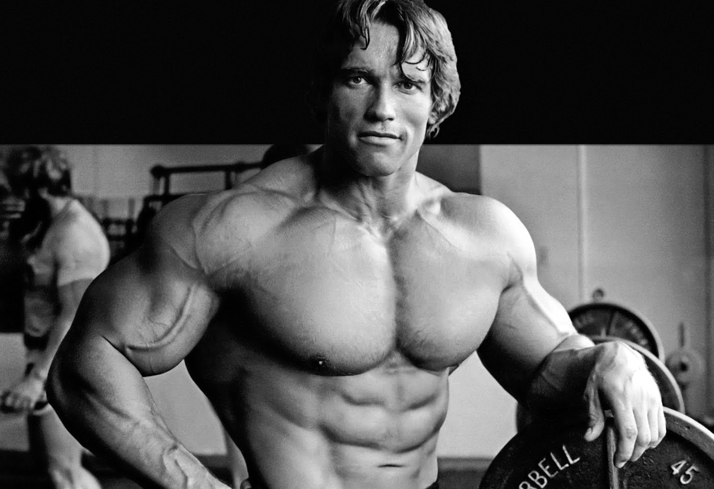

El objetivo de Schwarzenegger era convertirse en el mayor culturista del mundo, es decir, ganar el Mr. Olympia. En su primer intento en 1969, perdió contra el tres veces campeón Sergio Oliva. Sin embargo, Schwarzenegger volvió en 1970 y ganó la competición convirtiéndose en el más joven en hacerlo, un récord que aún ostenta.
Schwarzenegger menos pesado que de costumbre ganó el campeonato de 1975 de Mr. Olympia por sexto año consecutivo, superando a Franco Columbu. Tras el concurso de 1975, Schwarzenegger anunció su retirada del culturismo profesional.
Sin embargo Schwarzenegger volvió del retiro para competir en la edición de 1980 de Mr. Olympia. Schwarzenegger se entrenaba para su papel en Conan el Bárbaro, y se puso tan en forma debido al entrenamiento (carreras, monta a caballos y esgrima) que decidió que quería volver a ganar Mr. Olympia una última vez. Mantuvo este plan en secreto, por si se lesionaba al entrenarse. Schwarzenegger había sido contratado por una televisión para realizar comentarios, pero en el último momento dijo a todo el mundo: "¿Por qué no competir?" Schwarzenegger terminó ganando aquella edición con solo siete semanas de preparación. Después de ser proclamado Mr. Olympia por séptima ocasión, anunció su retirada definitiva.
Arnold Schwarzenegger y el culturismo
El objetivo de Schwarzenegger era convertirse en el mayor culturista del mundo, es decir, ganar el Mr. Olympia. En su primer intento en 1969, perdió contra el tres veces campeón Sergio Oliva. Sin embargo, Schwarzenegger volvió en 1970 y ganó la competición convirtiéndose en el más joven en hacerlo, un récord que aún ostenta.
Schwarzenegger menos pesado que de costumbre ganó el campeonato de 1975 de Mr. Olympia por sexto año consecutivo, superando a Franco Columbu. Tras el concurso de 1975, Schwarzenegger anunció su retirada del culturismo profesional.
Sin embargo Schwarzenegger volvió del retiro para competir en la edición de 1980 de Mr. Olympia. Schwarzenegger se entrenaba para su papel en Conan el Bárbaro, y se puso tan en forma debido al entrenamiento (carreras, monta a caballos y esgrima) que decidió que quería volver a ganar Mr. Olympia una última vez. Mantuvo este plan en secreto, por si se lesionaba al entrenarse. Schwarzenegger había sido contratado por una televisión para realizar comentarios, pero en el último momento dijo a todo el mundo: "¿Por qué no competir?" Schwarzenegger terminó ganando aquella edición con solo siete semanas de preparación. Después de ser proclamado Mr. Olympia por séptima ocasión, anunció su retirada definitiva.